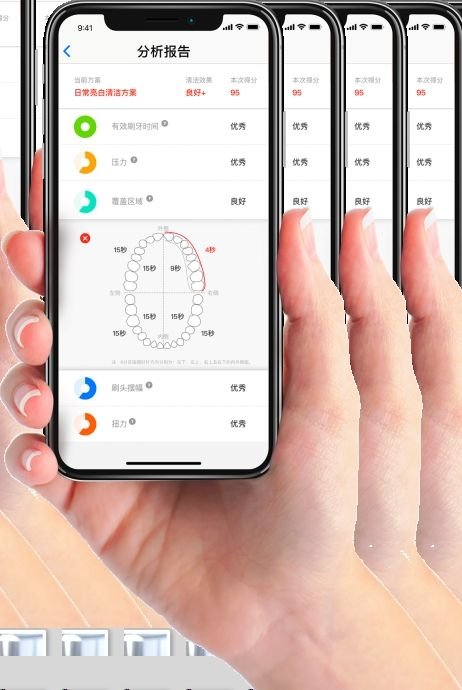

Soğuk Nano Difüzyon Teknolojisi
Esans yağlarının kimyasal yapısını bozmadan, ısı veya su kullanmadan mikro nano partiküllere dönüştüren patentli atomizasyon altyapısı.
Neden Kuru Sis? Islak Tortu Bırakmayan Difüzyon
Geleneksel aerosol veya su buharlı makineler 20 mikrondan büyük damlacıklar üretir. Bu damlacıklar mobilyalara, camlara ve tekstil yüzeylerine çarparak kırılır ve yapışkan yağ lekesi bırakır.
Çift akışkanlı (two-fluid) sıkıştırılmış hava teknolojisi ise esans yağını ultra ince nano partiküllere (<3-5μm) ayrıştırır. Bu partiküller yüzeylere yapışmadan havada seker ve doğal hava akımıyla mekânın her köşesine eşit yayılır.
Atomizasyon Davranış Analizi
Geleneksel aerosol ile DummyCosmetics soğuk kuru sis teknolojisinin havada asılı kalma farkı.
İki akışkanlı patentli nozül hava akımıyla esansı nano boyuta indirger. Havada molekül gibi süzülür, mobilyalara çarpınca sekip havada kalır.

Akıllı Telefon ve Bluetooth & WiFi Kontrolü
Cihazların çalışma saatlerini, püskürtme sıklığını ve koku yoğunluğunu doğrudan akıllı telefon uygulamasından veya cihaz üzerindeki CNC dijital ekrandan yönetebilirsiniz.
Haftanın günlerine ve mesai saatlerine göre otomatik açılma / kapanma programı.
Mekânın insan yoğunluğuna göre saniyelik püskürtme ve duraklama aralığı ayarı.
Esans azaldığında uygulama üzerinden uyarı vererek bakım maliyetlerini minimize eder.
HVAC & Taze Hava Kanallarına Doğrudan Bağlantı
CK-631, CK-620 ve CK-611 serisi; binanın merkezi havalandırma kanallarına (HVAC) doğrudan bağlanabilir. Tek bir merkezden binlerce metrekareye koku eşit şekilde taşınır.
Görünmez Difüzyon
Mekânda hiçbir cihaz görünmez; koku doğrudan menfezlerden doğal hava ile birlikte yayılır.
Yüksek Basınç
Dahili hava kompresörleri kanal içi hava direncini kırarak homojen basınç sağlar.
Teleskopik Hızlı Bakım
CK-656 modelinde 3 metrelik teleskopik çubuk ile merdivene gerek duymadan anında kartuş değişimi.